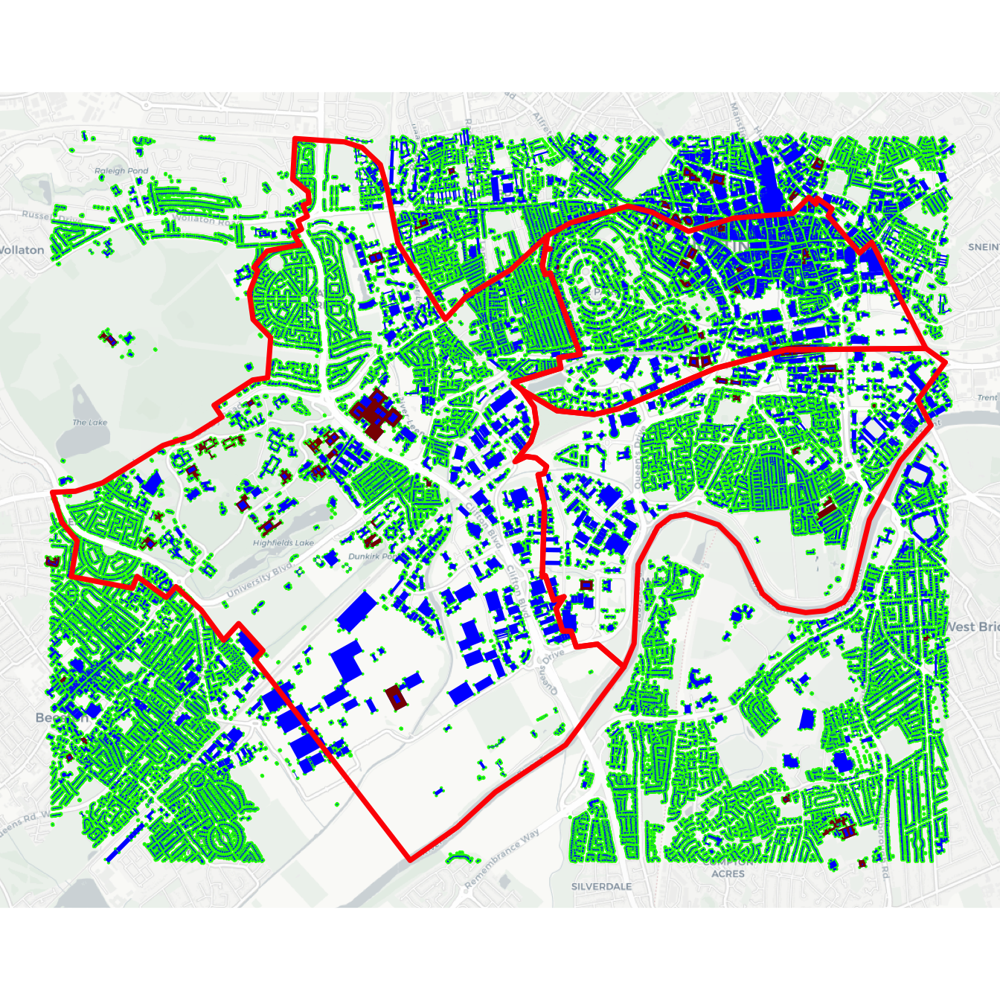
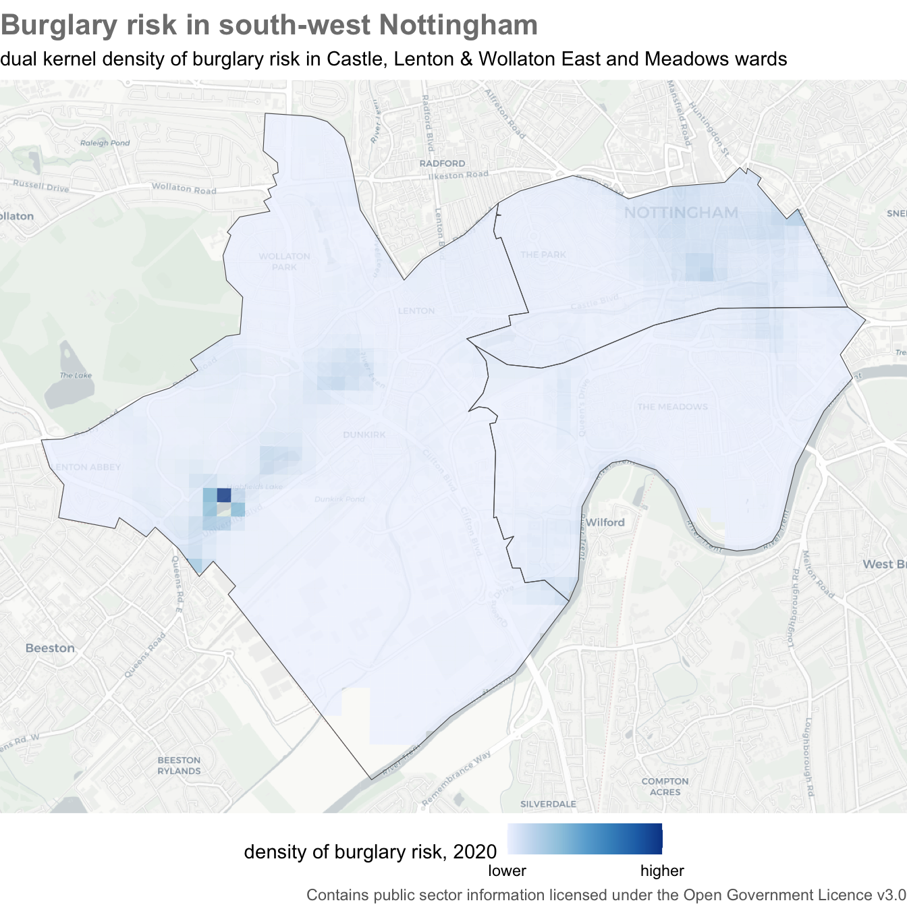
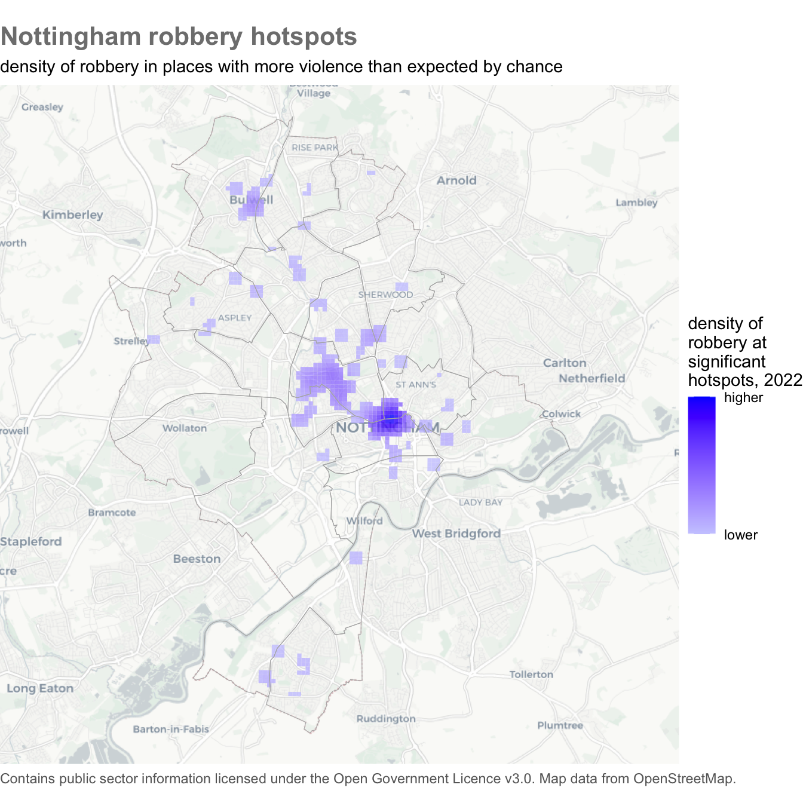

This chapter introduces the concept of crime hotspots and their significance in crime analysis. You will learn how to define hotspots, understand their different types, and explore why crime tends to cluster in specific areas. Using R, we will demonstrate methods to map hotspots effectively, helping to visualize high-risk areas. The chapter also covers techniques such as dual kernel density estimation to measure crime risk. By the end, you will have practical skills to create crime hotspot maps, aiding in data-driven decision-making for crime prevention and law enforcement strategies.
11.1 What is a hotspot?
Crime is heavily concentrated in several different ways. A small number of offenders commit a large proportion of crime (even though most people commit minor offences occasionally) and a small number of people are repeatedly victimised. For most types of crime, a large proportion of crime occurs in a small number of places. A hotspot is a specific location or small area where an unusual amount of criminal activity occurs.
Crime hotspots can occur in several different forms. Watch this video to understand why hotspots are important in understanding and responding to crime.
Some places are chronic hotspots – they have more crime than surrounding areas over a sustained period (which may appear to be permanent). Chronic hotspots are often generated by a facility that draws vulnerable people into an area, such as a tourist attraction that draws crowds of people who are vulnerable to pickpocketing. Other places are acute hotspots, in which crime increases in a place that previously experienced no or few crimes. This may be the result of some change in the environment or how it’s managed, such as new management that ignores drug dealing at a bar that the previous owners would have not tolerated.
When analysing hotspots, it is best to focus on small areas such as an apartment block, a shopping centre, a park or a single street. Focusing on smaller areas is important because resources to respond to crime are almost always limited, so it is important that those resources are directed where the problem is worst.
Analysing larger areas, such as a neighbourhood or a police sector, is much more difficult because larger areas are always made up of many smaller areas, each of which might be quite different from one another. This means that the factors causing one street to be a hotspot might be quite different from the factors that make another street in the same district into a hotspot. Conflating different problems with different causes makes it much harder to find effective ways to reduce crime in any one place.
These difficulties can be avoided (at least partly) by keeping hotspots small: in an urban area, a useful rule of thumb is that you should be able to stand in the middle of a hotspot and see the whole hotspot area.
Being able to identify hotspots using crime mapping is important because it forms a vital first step in many place-focused responses to crime. As an example of this, watch this video about how police in Philadelphia worked with researchers to use crime mapping to identify where to deploy foot patrols to reduce crime.
In this chapter we will learn how to make maps that could be useful in identifying and responding to hotspots of crime. As an example, we will create this map showing hotspots of robbery in Nottingham, England.
Crime hotspots
Which one of these statements is true?
11.2 Showing the density of risk
In Chapter 9 we learned how to produce maps showing the incidence rate of crime by dividing the number of crimes by a measure of the population at risk of being targeted. We will often only have population estimates for areas, such as census estimates of the number of people living in an area. But for some crimes we have access to estimates of the people (or, more often, objects) at risk of being a target of a particular crime. In these cases, we can produce better maps of the risk of crime in different areas by producing a dual KDE map that shows the density of crime risk in different places.
To create a dual KDE map, we must estimate the density of crime and compare it to an estimate the density of the population at risk. Since an incidence rate is calculated as the number of crimes divided by the number of people or objects at risk, we can calculate the density of risk by dividing the density of crime estimated for each cell in the grid by the density of population estimated for the same cell. The hotspot_dual_kde() function from the sfhotspot package does this for us.
To illustrate making a dual KDE map, we will use reports of burglaries in three wards in Nottingham in 2020. Since the essential element of the crime of burglary in England is that an offender enters a building as a trespasser in order to steal something, the best measure of the population at risk of burglary is the number of buildings in each area (the definition of burglary is more complicated than this, but we don’t need to worry about that here).
What’s the difference between theft, burglary and robbery?
Definitions of crime vary between countries. But theft (sometimes called larceny) is usually defined as the act of dishonestly taking property belonging to another person while intending to keep (not just borrow) the property or treat it as the offender’s own. Shoplifting, bike theft, car theft and pickpocketing are all types of theft.
Burglary and robbery are both special types of theft. A burglary is a theft committed inside a building that the offender does not have the owner’s permission to be in. The most obvious type of burglary is when an offender breaks into a victim’s home and steals valuables from inside. But burglary can also be committed in non-residential buildings: some types of business are frequent targets of burglary.
A robbery is a theft in which the offender uses violence or the threat of violence against the victim. It is important to remember that burglary and robbery are separate crimes. Since robbery requires (the threat of) violence against a person, robbery risk is usually described in terms of the number of robberies for a certain number of people. Burglary, on the other hand, can only take place in a building, so burglary risk is usually described in terms of the number of burglaries for a certain number of premises.
Burglary is a good example of why the routine activities approach to thinking about crime that we introduced in Chapter 1 emphasises thinking about targets of crime rather than focusing only on crime victims. In the case of burglary, one person might be the owner of a large number of buildings (e.g. a farm with lots of out-buildings) or lots of people might own a single building (such as a house converted into flats). By thinking about the targets that are attacked by offenders, we can identify that burglary rates should be calculated based on buildings rather than, for example, residential population. Note that if our crime data only included residential burglaries then we would want to use residential buildings as our denominator, but in this case we have data for all burglaries, both residential and non-residential.
11.2.1 Data wrangling
Before we can create our dual KDE layer, we have to complete some data wrangling. We will extract the boundaries for the wards of interest from a dataset of boundaries for all wards in Nottingham using filter() as we have done previously. To extract only the burglaries occurring in those three wards from a dataset of all burglaries in Nottingham, we will use st_intersection(). We will also transform both datasets to use the British National Grid (EPSG:27700), since we will need to do that anyway before calculating the KDE values.
Open RStudio and make sure you are working within the project you created in Section 1.4.2. Create a new R script file and save it as chapter11a.R. Paste the following code into that file and run it.
chapter11a.R
# Load packagespacman::p_load(ggspatial, osmdata, sf, sfhotspot, tidyverse)# Load dataset of wards in Nottingham and choose the ones we wantwards <-read_sf("https://mpjashby.github.io/crimemappingdata/nottingham_wards.gpkg") |>st_transform("EPSG:27700") |>filter(ward_name %in%c("Castle", "Lenton & Wollaton East", "Meadows"))# Load dataset of burglaries and keep only those in the wards of interestburglaries <-read_csv("https://mpjashby.github.io/crimemappingdata/nottingham_burglary.csv.gz") |>st_as_sf(coords =c("longitude", "latitude"), crs ="EPSG:4326") |>st_transform("EPSG:27700") |>st_intersection(wards)
We do not have a source of open data for all the buildings in Nottingham, so we will use the osmdata package to get the locations of buildings from OpenStreetMap (OSM). You may remember from Chapter 10 that to do this we need to know which key (and possibly value) the OSM database uses for storing the locations of buildings. The OSM feature key for a building is ‘building’ and it is not necessary to specify a value (since we want to capture all types of building). The osmdata package expects data to use the WGS84 co-ordinate reference system, so we must also make sure any data sources we use are projected using that system (EPSG:4326).
Add this code to your R script and run it.
chapter11a.R
nottingham_buildings <- wards |># Transform ward boundaries to CRS needed by `opq()`st_transform("EPSG:4326") |># Calculate bounding boxst_bbox() |># Set up OSM queryopq() |># Add type of feature to fetchadd_osm_feature(key ="building") |># Fetch features from OSM databaseosmdata_sf()
Let’s look at the content of the nottingham_buildings object:
R Console
nottingham_buildings
Object of class 'osmdata' with:
$bbox : 52.9173362670705,-1.21712477980417,52.9596833099217,-1.13020878819132
$overpass_call : The call submitted to the overpass API
$meta : metadata including timestamp and version numbers
$osm_points : 'sf' Simple Features Collection with 164495 points
$osm_lines : 'sf' Simple Features Collection with 44 linestrings
$osm_polygons : 'sf' Simple Features Collection with 30468 polygons
$osm_multilines : 'sf' Simple Features Collection with 2 multilinestrings
$osm_multipolygons : 'sf' Simple Features Collection with 69 multipolygons
Looking at the nottingham_buildings object, we can see that OSM contains data on buildings stored as points, polygons and multipolygons (we can ignore the few linestrings tagged as buildings, since it doesn’t make sense for a building to be represented as a line rather than a point or a polygon).
What is a multipolygon?
OpenStreetMap stores features in several different ways. The most basic types are points, lines and polygons. But there are also multipolygons (and multilines). These are features that represent complex structures such as clusters of buildings that are separate structures but are related to each other. For example, a hospital with several buildings might be represented in OpenStreetMap as a single multipolygon feature. A multipolygon might also be used to represent complex building shapes such as buildings with a courtyard or light well in the middle.
Let’s create a simple map of the results produced by osmdata_sf(), comparing them to the buildings shown on a base map to check that OSM has reasonable coverage of the buildings in these three wards. This code uses the pluck() function from the purrr package (part of the tidyverse) to extract the different elements from the nottingham_buildings object.
R Console
ggplot() +annotation_map_tile(type ="cartolight", zoomin =0, progress ="none") +# Add building features stored as pointsgeom_sf(data =pluck(nottingham_buildings, "osm_points"), colour ="green",size =0.1 ) +# Add building features stored as polygonsgeom_sf(data =pluck(nottingham_buildings, "osm_polygons"), colour =NA,fill ="blue" ) +# Add building features stored as multi-polygonsgeom_sf(data =pluck(nottingham_buildings, "osm_multipolygons"), colour =NA,fill ="darkred" ) +geom_sf(data = wards, colour ="red", fill =NA, linewidth =1.25) +theme_void()

osmdata_sf() returns data for a bounding box
Remember that osmdata_sf() gets OSM data for the area covered by the bounding box of the input feature, not the feature boundaries. This means some of the buildings returned by the code above will be outside the wards we are interested in. We will deal with that shortly.
It looks like almost all the streets in the three wards we are interested in are lined with buildings in the OSM data, which is what we would expect of streets in an urban area. There are some streets without buildings in the top-left of the map, but these streets are outside our three wards so this does not matter.
We can also see from this map that the 164,495 point features in the OSM data (shown as green dots on the map) typically represent the corners of buildings that are also represented as polygons, so we know we can ignore the points layer within the OSM data.
Since the hotspot_dual_kde() function works on points, we need to convert the polygon and multipolygon layers to points by calculating their centroids, then merge the two layers together. This will generate a warning that st_centroid does not give correct centroids for longitude/latitude data but we can ignore this because the calculated centroids will be good enough for our purposes (if we wanted to, we could transform the data to use the British National Grid, calculate the centroids and then transform it back).
Since we are only interested in those buildings in three particular wards, we can also at this stage remove any buildings that are outside those wards using st_intersection(), as we have already done for the burglaries object. Since the wards object uses the British National Grid and st_intersection() requires both datasets to use the same co-ordinate system, we will transform the building centroids before clipping them.
Add this code to the chapter11a.R file and run it.
chapter11a.R
# Extract polygon/multipolygon layers and combine them into a single objectnottingham_building_centroids <-bind_rows(pluck(nottingham_buildings, "osm_polygons"), pluck(nottingham_buildings, "osm_multipolygons")) |># Convert polygons to pointsst_centroid() |># Transform to same CRS as `wards` objectst_transform("EPSG:27700") |># Remove any points outside the wards of interestst_intersection(wards)
Warning: st_centroid assumes attributes are constant over geometries
Warning: attribute variables are assumed to be spatially constant throughout
all geometries
What does the warning st_centroid assumes … mean?
You might have seen a warning saying st_centroid assumes attributes are constant over geometries of x. You will see this warning when you use the st_centroid() function. It is there to remind you that columns in the original data (which the SF package refers to as the attributes associated with each spatial feature) refer to the polygon as a whole, but in the object produced by st_centroid() it will appear that the columns relate to the centroid point. In many cases this will not be a problem, but it could expose you to the ecological fallacy so it is sometimes useful to be reminded.
What does the warning attribute variables are assumed … mean?
st_intersection() produces a warning message whenever it is used:
Warning: attribute variables are assumed to be spatially constant throughout all geometries
As long as you are simply using st_intersection() to remove parts of the data outside a boundary, you can ignore this message.
11.2.2 Calculating dual kernel density
We now have the object burglaries that contains the locations of each burglary in the three Nottingham wards that we are interested in, and the object nottingham_building_centroids that contains the centroids of each building in those three wards. We can use these layers to estimate the density of burglaries and buildings, then combine these to estimate the density of burglary risk.
hotspot_dual_kde() works in the same way as hotspot_kde(), except that it requires two datasets. In this case, that means one dataset of crime locations and one dataset of building locations. hotspot_dual_kde() will set the cell size and bandwidth automatically, but we can set them manually using the cell_size, bandwidth_adjust and grid arguments in the same way we have done for hotspot_kde(). In this case, we will use the hotspot_grid() helper function to create a grid based on the boundaries of the wards we are interested in. All the spatial objects we are going to use here have co-ordinates specified using the British National Grid because we have already transformed them, so we do not need to do any transformation here.
chapter11a.R
# Estimate density of burglary riskburglary_risk <-hotspot_dual_kde( burglaries, nottingham_building_centroids, bandwidth_adjust =0.25, grid =hotspot_grid(wards, cell_size =100),quiet =TRUE) |>st_intersection(wards)
Warning: attribute variables are assumed to be spatially constant throughout
all geometries
You might recall from earlier in this chapter that the value of the kde column in the object produced by hotspot_dual_kde() is calculated by dividing the density of burglary in each grid cell by the density of buildings in the same grid cell. There are two cases where this will produce a result that is not a finite number:
If, for a particular cell, the density of burglaries and density of buildings are both zero, dividing one by the other will produce the result NaN, for ‘not a number’.
If the density of burglaries is greater than zero but the density of buildings is exactly zero, the result will be Inf, for ‘infinite’.
Since it is not possible to calculate burglary risk in either of those cases, we can exclude these cases from the burglary_risk object by using filter() together with the is.finite() function (R does not count NaN as a finite number):
You might wonder why we didn’t simply add filter() to the existing pipeline that creates the burglary_risk object. It is because we will need the unfiltered object in the next section of this chapter, but in your own code it will be better to add filter(is.finite(kde)) to the pipeline after st_intersection(). But for now …
We can plot the estimate of the density of burglary risk. By controlling for the density of buildings, this map shows us where building owners on average face the highest risk of being burgled. This might be useful in working out, for example, which building owners should be offered visits from a crime-prevention advisor or funding to install crime-prevention measures.
Add this code to your script file and run it to produce a map:
chapter11a.R
ggplot() +annotation_map_tile(type ="cartolight", zoomin =0, progress ="none") +# Add burglary risk layergeom_sf(aes(fill = kde), data = burglary_risk_filtered, alpha =0.8, colour =NA ) +# Add ward boundariesgeom_sf(data = wards, fill =NA) +scale_fill_distiller(breaks =range(pull(burglary_risk_filtered, "kde")),labels =c("lower", "higher"),direction =1 ) +labs(title ="Burglary risk in south-west Nottingham",subtitle =str_glue("dual kernel density of burglary risk in Castle, Lenton & Wollaton ","East and Meadows wards" ),caption =str_glue("Contains public sector information licensed under the Open ","Government Licence v3.0" ),fill ="density of burglary risk, 2020" ) +theme_void() +theme(legend.position ="bottom",plot.caption =element_text(colour ="grey40"),plot.subtitle =element_text(margin =margin(t =6, b =6)),plot.title =element_text(colour ="grey50", face ="bold", size =16) )

You might think this map looks strange: almost all the burglary risk seems to be concentrated in one grid cell on the left-hand side of the map. This illustrates one of the limitations of grid-based approaches to understanding the concentration of crime in different places. The northern half of the Lenton & Wollaton East Ward (the western-most of the three wards shown on this map) is home to the University of Nottingham main campus. This campus consists of dozens of separate buildings, each of which could be burgled. But when a university building is burgled and that is reported to the police, the police record that crime as having happened at the university’s main administration building (because that is the postal address of the university). This means that while all the burglaries occurring over a large area are recorded as occurring in one grid cell, the corresponding building centroids are spread out over a large number of grid cells. That means when we calculate the incidence rate of burglary for this map, we get an inaccurate picture.
Whenever you use police-recorded data – or any other administrative data collected by a government agency – it is important to think about how that data was collected and what limitations it may have. There are some common issues that you should look out for when dealing with police-recorded crime locations:
Assaults that are disclosed by people attending hospital for their injuries are sometimes recorded as having occurred at the hospital (since that’s where police have been called to) rather than at the actual location they occurred.
Drugs and weapons discovered when arrested people are searched at the police station are sometimes recorded as illegal possession of drugs/weapons at the station, rather than at the location where the person was first stopped by police.
Crimes on public transport are sometimes recorded as having occurred at the nearest station, or at station where the victim ended their journey, rather than at the location where they actually occurred.
If we wanted to understand burglary risk on the University of Nottingham campus, it would probably be necessary to use a different dataset (for example using records kept by the university security department).
Dual kernel density
Which one of these statements is true?
Why do we usually clip the result of hotspot_dual_kde() using st_intersection()?
11.3 Finding hotspots
We now know how to produce a better map of the density of crime in different areas. But how do we know which areas count as hotspots and which don’t?
Each of the 16 density maps below show density estimates based on 1,000 points placed completely at random on 16 different maps. There are no real patterns in the data except for statistical noise. Nevertheless, the KDE process makes it appear that there are patterns in the data.
This is a problem because we might end up responding to an apparent problem that is nothing but an artefact of the random variation that we expect to see in many processes, including crime.
If the police and other agencies looked at these patterns and did nothing in response to them, it is likely that over time some of the areas with high density would become areas of low density, and vice versa. However, the harm caused by crime means it is very hard for agencies to justify sitting back and do nothing to respond to it – many people would consider it immoral to do so. So police and other agencies are very likely to try to respond to crime patterns, even if those patterns might have occurred by chance. This is very frustrating, because if we were to go back and look at the same data in a few months time it is very likely that the apparent hotspots would have shifted to somewhere different, making all the effort spent in responding to crime seem worthless (which, if the apparent patterns were actually artefacts of the KDE process, it may have been).
You might be thinking it’s better safe than sorry, and that police should respond to the apparent patterns just in case they represent real concentrations in crime. But police resources are always scarce, so responding to one problem in one place means not responding to another problem in another place. This is known as the opportunity cost of acting: if police focus their limited resources in one area, that comes at the cost of not being able to deploy those resources in other areas that might need it more.
We can try to avoid this problem of wasting resources responding to random variation in crime by determining whether the number of crimes in an area is more than the greatest number we would reasonably expect if there were no actual patterns in the data (if you have studied statistics before, you might recognise this as a description of a null hypothesis, but you don’t need to have studied statistics to apply the techniques in this course).
To determine if the number of crimes in each area is greater than we would expect by chance, we can use the Getis-Ord Gi* statistic (also called the local G statistic, spoken out-loud as the G-I star statistic). If the Gi* statistic for an area is greater than a certain value, we can say that the number of crimes in that area is higher than we would expect if there were no patterns in the data. We will call areas with more crimes than we would expect by chance as hotspots.
We can calculate the Gi* statistic using the hotspot_gistar() function from the sfhotspot package. This works in a similar way to the hotspot_kde() function, in that it takes an SF object of the locations of crimes and returns an SF object with a grid of cells, along with the Gi* value for each grid cell. Like hotspot_kde(), hotspot_gistar() will choose default values for several ways in which we could fine-tune the calculation of the Gi* statistic, but we could over-ride these defaults if we wanted to.
Open a new R script file and save it as chapter11b.R.
In this example, we will find the hotspots of robbery in Nottingham in 2020, based on a grid of 100-metre cells. We will store this in an object called robbery, transform it to use the British National Grid co-ordinate system (so we can specify the cell size in metres) and then use the resulting object to calculate the Gi* values.
Rows: 555 Columns: 5
── Column specification ────────────────────────────────────────────────────────
Delimiter: ","
chr (2): location, lsoa_code
dbl (2): longitude, latitude
date (1): month
ℹ Use `spec()` to retrieve the full column specification for this data.
ℹ Specify the column types or set `show_col_types = FALSE` to quiet this message.
Instead of using head() to view the first few rows of the object we have just created, let’s use sample_n() to return a random sample of rows from that object:
The robbery_gistar object contains one row for each cell in a grid of cells covering the area of the robbery data. Each row has four columns:
n shows the number of robberies that occurred in that grid cell,
kde shows the density of robberies in that cell,
gistar shows the Gi* value for that cell, and
pvalue shows the \(p\)-value for that cell.
The Gi* statistic is an example of a more general group of statistics called \(Z\)scores. Statisticians and data analysts compare the \(Z\) scores produced by statistical procedures such as hotspot_gistar() to reference values to decide if a \(Z\) score is large enough to be treated as statistically significant, i.e. if it is large enough to conclude that it is larger than we would expect if there were no actual patterns in the data. Deciding on the right reference value to compare a \(Z\) score to can be difficult because of what’s known as the multiple comparison problem (which we don’t need to go into detail about). Fortunately, the values in the pvalue column have already been automatically adjusted to take account of the multiple comparison problem, so we can interpret the \(p\)-values instead of interpreting the Gi* statistic directly.
Filter data before calcuating Gi* values
Since Gi* is a relative measure, if you have data for a large area (e.g. a country) but only want to show data for a smaller area (e.g. a city), the Gi* values will be influenced by the large areas with no crime and all of the city is likely to be identified as a hotspot. To prevent this, it is important to clip the dataset before calculating the Gi* values, as well as then clipping afterwards where necessary.
By convention, \(p\)-values are considered to be significant if they are less than 0.05. So if \(p<0.05\), we can say that the number of robberies occurring in a given grid cell is significantly different from zero. Values of Gi* greater than zero indicate cells with more robberies than expected and values of Gi* less than zero indicate cells with fewer robberies than expected. We can combine these two values to find cells with significantly more robberies than expected by chance, which are those cells for which \(Z>0\) and \(p<0.05\). To put that into R code, we would write gistar > 0 and p < 0.05.
We could use this information in various ways. For example, if we wanted to give local police officers a printed map of which areas to patrol, we could simply show the significant hotspot cells over a base map.
Since hotspot_gistar() also estimates density for each grid cell, we could more usefully show the density of robberies in each cell, but only for cells that the Gi* values showed were significant hotspots.
This map could be very useful for police officers deciding where to conduct anti-robbery patrols, because it not only shows the areas with the highest density of robberies but only shows those areas if there are more robberies than we would expect by chance. This makes it more likely that officers won’t waste time chasing apparent patterns that are actually the result of random variation.
One limitation of this map, though, is that it’s hard to see the hotspots that have the lowest KDE values. It is important to be able to see these cells, since they have a higher density of robbery than we would expect by chance even if that density is lower than for some other cells. To deal with this problem, we can use a different colour scale so that instead of the colours varying between light blue and dark blue, they instead vary between mid blue and dark blue.
To do that, we replace scale_fill_distiller() in our ggplot() stack with another scale function: scale_fill_gradient(). This allows us to specify two colours and ggplot2 will automatically create a gradient of colours between them. We can specify colours in R in several ways, but the code below uses the rgb() helper function to specify a colour as being made of up of three components: red, green and bblue. Each of these is specified as a value between zero and one, with higher values giving lighter shades. You can see this approach being used in the final script file below.
Gi*
robbery_gi is an object storing a result produced by the hotspot_gistar() function. Which of these pieces of code could be used to extract only those rows in the data with significant p-values?
Which one of these statements is true about an SF object called robberies_in_nottingham?
11.4 Putting it all together
In this chapter we have learned about hotspots, how to create dual KDE maps and how to find significant hotspots using the Gi* statistic. We can put this all together to create a complete script for producing a map of robbery hotspots in Nottingham
The following code is all that is needed to produce this map. Read through the comments accompanying the code to see how what we have learned in this chapter fits together, then run the code to produce the map.
chapter11b.R
# Prepare ----------------------------------------------------------------------# Load packagespacman::p_load(ggspatial, sf, sfhotspot, tidyverse)# Load data and transform to British National Grid, which is easier to work with# for functions that use spatial units such as metresrobbery <-read_csv("https://mpjashby.github.io/crimemappingdata/nottingham_robbery.csv.gz") |>st_as_sf(coords =c("longitude", "latitude"), crs ="EPSG:4326") |>st_transform("EPSG:27700")nottingham_wards <-read_sf("https://mpjashby.github.io/crimemappingdata/nottingham_wards.gpkg") |>st_transform("EPSG:27700")# Find significant grid cells --------------------------------------------------# Calculate Gi* statistic, filter for only significant hotspot cells and clip to# the city boundaryrobbery_gistar <- robbery |>hotspot_gistar(cell_size =100, bandwidth_adjust =0.25, quiet =TRUE) |>filter(gistar >0, pvalue <0.05) |>st_intersection(nottingham_wards)# Plot map ---------------------------------------------------------------------ggplot() +annotation_map_tile(type ="cartolight", zoomin =0, progress ="none") +# Add density for significant cellsgeom_sf(aes(fill = kde), data = robbery_gistar, alpha =0.8,colour =NA ) +# Add ward boundariesgeom_sf(data = nottingham_wards, colour ="grey70", fill =NA) +scale_fill_gradient(low =rgb(0.8, 0.8, 1), high =rgb(0, 0, 1),breaks =range(pull(robbery_gistar, kde)),labels =c("lower", "higher") ) +fixed_plot_aspect() +labs(title ="Nottingham robbery hotspots",subtitle =str_glue("density of robbery in places with more violence than expected by ","chance" ),# Don't forget to add the licence statement -- it's a legal requirement!caption =str_glue("Contains public sector information licensed under the Open ","Government Licence v3.0. Map data from OpenStreetMap." ),fill =str_wrap("density of robbery at significant hotspots, 2022", 15) ) +theme_void() +theme(plot.caption =element_text(colour ="grey40", hjust =0),plot.subtitle =element_text(margin =margin(t =6, b =6)),plot.title =element_text(colour ="grey50", face ="bold", size =16) )
Rows: 555 Columns: 5
── Column specification ────────────────────────────────────────────────────────
Delimiter: ","
chr (2): location, lsoa_code
dbl (2): longitude, latitude
date (1): month
ℹ Use `spec()` to retrieve the full column specification for this data.
ℹ Specify the column types or set `show_col_types = FALSE` to quiet this message.
Warning: attribute variables are assumed to be spatially constant throughout
all geometries

Check your knowledge: Revision questions
Answer these questions to check you have understood the main points covered in this chapter. Write between 50 and 100 words to answer each question.
What are crime hotspots, and why are they important in crime analysis?
How do chronic and acute crime hotspots differ?
Why should hotspot analysis focus on small geographic areas rather than larger administrative regions?
What is dual kernel density estimation (dual KDE), and how does it improve crime hotspot analysis?
How can crime hotspot maps be used to inform crime prevention strategies?
Source Code
---execute: freeze: auto---# Mapping hotspots {#sec-mapping-hotspots}::: {.abstract}This chapter introduces the concept of crime hotspots and their significance in crime analysis. You will learn how to define hotspots, understand their different types, and explore why crime tends to cluster in specific areas. Using R, we will demonstrate methods to map hotspots effectively, helping to visualize high-risk areas. The chapter also covers techniques such as dual kernel density estimation to measure crime risk. By the end, you will have practical skills to create crime hotspot maps, aiding in data-driven decision-making for crime prevention and law enforcement strategies.:::## What is a hotspot?Crime is heavily concentrated in several different ways. A small number of offenders commit a large proportion of crime (even though most people commit minor offences occasionally) and a small number of people are repeatedly victimised. For most types of crime, a large proportion of crime occurs in a small number of places. **A hotspot is a specific location or small area where an unusual amount of criminal activity occurs**.Crime hotspots can occur in several different forms. Watch this video to understand why hotspots are important in understanding and responding to crime.{{< video https://youtu.be/ug-ZhvvQjmw >}}Some places are *chronic* hotspots -- they have more crime than surrounding areas over a sustained period (which may appear to be permanent). Chronic hotspots are often generated by a facility that draws vulnerable people into an area, such as a tourist attraction that draws crowds of people who are vulnerable to pickpocketing. Other places are *acute* hotspots, in which crime increases in a place that previously experienced no or few crimes. This may be the result of some change in the environment or how it's managed, such as new management that ignores drug dealing at a bar that the previous owners would have not tolerated.When analysing hotspots, it is best to focus on *small* areas such as an apartment block, a shopping centre, a park or a single street. Focusing on smaller areas is important because resources to respond to crime are almost always limited, so it is important that those resources are directed where the problem is worst. Analysing larger areas, such as a neighbourhood or a police sector, is much more difficult because larger areas are always made up of many smaller areas, each of which might be quite different from one another. This means that the factors causing one street to be a hotspot might be quite different from the factors that make another street in the same district into a hotspot. Conflating different problems with different causes makes it much harder to find effective ways to reduce crime in any one place. These difficulties can be avoided (at least partly) by keeping hotspots small: in an urban area, a useful rule of thumb is that you should be able to stand in the middle of a hotspot and see the whole hotspot area.Being able to identify hotspots using crime mapping is important because it forms a vital first step in many place-focused responses to crime. As an example of this, watch this video about how police in Philadelphia worked with researchers to use crime mapping to identify where to deploy foot patrols to reduce crime.{{< video https://youtu.be/0NUQsK0vnnM >}}In this chapter we will learn how to make maps that could be useful in identifying and responding to hotspots of crime. As an example, we will create this map showing hotspots of robbery in Nottingham, England.```{r make-robbery-map, eval=FALSE, echo=FALSE}# This dataset is not loaded above, so we load it herenottingham <- read_sf("https://mpjashby.github.io/crimemappingdata/nottingham_wards.gpkg") |> st_transform("EPSG:27700")robbery_gi <- robbery |> hotspot_gistar(cell_size = 100, bandwidth_adjust = 0.25) |> filter(gistar > 0, pvalue < 0.05) |> st_intersection(nottingham)nottingham_robbery_map <- ggplot() + annotation_map_tile(type = "cartolight", zoomin = 0, progress = "none") + geom_sf( aes(fill = kde), data = robbery_gi, alpha = 0.8, colour = NA ) + geom_sf(data = nottingham, colour = "grey70", fill = NA) + scale_fill_gradient( low = "lightblue", high = "darkblue", breaks = range(pull(robbery_gi, kde)), labels = c("lower", "higher") ) + fixed_plot_aspect() + labs( title = "Nottingham robbery hotspots", subtitle = str_glue( "density of robbery in places with more violence than expected by ", "chance" ), # Don't forget to add the licence statement -- it's a legal requirement! caption = str_wrap( str_glue( "Contains public sector information licensed under the Open ", "Government Licence v3.0. Map data from OpenStreetMap." ), width = 60 ), fill = str_wrap("density of robbery at significant hotspots, 2022", 15) ) + theme_void() + theme( legend.text = element_text(size = rel(0.7)), legend.title = element_text(size = rel(0.8)), plot.caption = element_text(colour = "grey40", hjust = 0), plot.subtitle = element_text(margin = margin(t = 6, b = 6), size = rel(0.7)), plot.title = element_text(colour = "grey50", face = "bold", size = rel(1.2)) )ggsave( here::here("images/nottingham_robbery_map.jpg"), nottingham_robbery_map, width = 900 / 150, height = 800 / 150, dpi = 150)```<p class="full-width-image"><img src="../images/nottingham_robbery_map.jpg" alt="A hotspot map of robberies in Nottingham"></p>::: {.callout-quiz .callout}#### Crime hotspots```{r why-maps-quiz}#| echo: falsehotspot_quiz1 <- c( "Crime is extremely geographically concentrated – we can expect half of crime to be concentrated in about 1% of micro places", answer = "Crime is very geographically concentrated – we can expect half of crime to be concentrated in about 5% of micro places", "Crime is slightly geographically concentrated – we can expect half of crime to be concentrated in about one quarter of micro places", "Crime is usually not geographically concentrated at micro places")```**Which one of these statements is true?**`r webexercises::longmcq(hotspot_quiz1)`:::## Showing the density of riskIn @sec-mapping-area-data we learned how to produce maps showing the *incidence rate* of crime by dividing the number of crimes by a measure of the population at risk of being targeted. We will often only have population estimates for areas, such as census estimates of the number of people living in an area. But for some crimes we have access to estimates of the people (or, more often, objects) at risk of being a target of a particular crime. In these cases, we can produce better maps of the risk of crime in different areas by producing a *dual KDE* map that shows the density of crime *risk* in different places.To create a dual KDE map, we must estimate the density of crime and compare it to an estimate the density of the population at risk. Since an incidence rate is calculated as the number of crimes divided by the number of people or objects at risk, we can calculate the density of risk by dividing the density of crime estimated for each cell in the grid by the density of population estimated for the same cell. The `hotspot_dual_kde()` function from the sfhotspot package does this for us.To illustrate making a dual KDE map, we will use reports of burglaries in three wards in Nottingham in 2020. Since the essential element of the crime of burglary in England is that an offender enters a _building_ as a trespasser in order to steal something, the best measure of the population at risk of burglary is the number of _buildings_ in each area (the definition of burglary is more complicated than this, but we don't need to worry about that here). ::: {.callout-tip collapse="true"}#### What's the difference between theft, burglary and robbery?Definitions of crime vary between countries. But theft (sometimes called _larceny_) is usually defined as the act of dishonestly taking property belonging to another person while intending to keep (not just borrow) the property or treat it as the offender's own. Shoplifting, bike theft, car theft and pickpocketing are all types of theft.Burglary and robbery are both special types of theft. A burglary is a theft committed inside a building that the offender does not have the owner's permission to be in. The most obvious type of burglary is when an offender breaks into a victim's home and steals valuables from inside. But burglary can also be committed in non-residential buildings: some types of business are frequent targets of burglary.A robbery is a theft in which the offender uses violence or the threat of violence against the victim. It is important to remember that burglary and robbery are separate crimes. Since robbery requires (the threat of) violence against a person, robbery risk is usually described in terms of the number of robberies for a certain number of _people_. Burglary, on the other hand, can only take place in a building, so burglary risk is usually described in terms of the number of burglaries for a certain number of _premises_.:::Burglary is a good example of why the routine activities approach to thinking about crime that we introduced in @sec-getting-started emphasises thinking about _targets_ of crime rather than focusing only on crime _victims_. In the case of burglary, one person might be the owner of a large number of buildings (e.g. a farm with lots of out-buildings) or lots of people might own a single building (such as a house converted into flats). By thinking about the targets that are attacked by offenders, we can identify that burglary rates should be calculated based on buildings rather than, for example, residential population. Note that if our crime data only included _residential_ burglaries then we would want to use _residential_ buildings as our denominator, but in this case we have data for all burglaries, both residential and non-residential.### Data wranglingBefore we can create our dual KDE layer, we have to complete some data wrangling. We will extract the boundaries for the wards of interest from a dataset of boundaries for all wards in Nottingham using `filter()` as we have done previously. To extract only the burglaries occurring in those three wards from a dataset of all burglaries in Nottingham, we will use `st_intersection()`. We will also transform both datasets to use the British National Grid (EPSG:27700), since we will need to do that anyway before calculating the KDE values.Open RStudio and make sure you are working within the project you created in @sec-create-project. Create a new R script file and save it as `chapter11a.R`. Paste the following code into that file and run it.```{r}#| eval: false#| filename: "chapter11a.R"# Load packagespacman::p_load(ggspatial, osmdata, sf, sfhotspot, tidyverse)# Load dataset of wards in Nottingham and choose the ones we wantwards <-read_sf("https://mpjashby.github.io/crimemappingdata/nottingham_wards.gpkg") |>st_transform("EPSG:27700") |>filter(ward_name %in%c("Castle", "Lenton & Wollaton East", "Meadows"))# Load dataset of burglaries and keep only those in the wards of interestburglaries <-read_csv("https://mpjashby.github.io/crimemappingdata/nottingham_burglary.csv.gz") |>st_as_sf(coords =c("longitude", "latitude"), crs ="EPSG:4326") |>st_transform("EPSG:27700") |>st_intersection(wards)``````{r}#| include: false# Load packagespacman::p_load(ggspatial, osmdata, sf, sfhotspot, tidyverse)# Load dataset of wards in Nottingham and choose the ones we wantwards <-read_sf("https://mpjashby.github.io/crimemappingdata/nottingham_wards.gpkg") |>st_transform("EPSG:27700") |>filter(ward_name %in%c("Castle", "Lenton & Wollaton East", "Meadows"))# Load dataset of burglaries and keep only those in the wards of interestburglaries <-read_csv("https://mpjashby.github.io/crimemappingdata/nottingham_burglary.csv.gz") |>st_as_sf(coords =c("longitude", "latitude"), crs ="EPSG:4326") |>st_transform("EPSG:27700") |>st_intersection(wards)```We do not have a source of open data for all the buildings in Nottingham, so we will use the osmdata package to get the locations of buildings from OpenStreetMap (OSM). You may remember from @sec-place-data that to do this we need to know which key (and possibly value) the OSM database uses for storing the locations of buildings. The OSM feature key for a building is 'building' and it is not necessary to specify a value (since we want to capture all types of building). The osmdata package expects data to use the WGS84 co-ordinate reference system, so we must also make sure any data sources we use are projected using that system (EPSG:4326).Add this code to your R script and run it.```{r}#| filename: "chapter11a.R"nottingham_buildings <- wards |># Transform ward boundaries to CRS needed by `opq()`st_transform("EPSG:4326") |># Calculate bounding boxst_bbox() |># Set up OSM queryopq() |># Add type of feature to fetchadd_osm_feature(key ="building") |># Fetch features from OSM databaseosmdata_sf()```Let's look at the content of the `nottingham_buildings` object:```{r}#| filename: "R Console"nottingham_buildings```Looking at the `nottingham_buildings` object, we can see that OSM contains data on buildings stored as points, polygons and multipolygons (we can ignore the few linestrings tagged as buildings, since it doesn't make sense for a building to be represented as a line rather than a point or a polygon). ::: {.callout-tip collapse="true"}#### What is a multipolygon?OpenStreetMap stores features in several different ways. The most basic types are points, lines and polygons. But there are also multipolygons (and multilines). These are features that represent complex structures such as clusters of buildings that are separate structures but are related to each other. For example, a hospital with several buildings might be represented in OpenStreetMap as a single multipolygon feature. A multipolygon might also be used to represent complex building shapes such as buildings with a courtyard or light well in the middle.:::Let's create a simple map of the results produced by `osmdata_sf()`, comparing them to the buildings shown on a base map to check that OSM has reasonable coverage of the buildings in these three wards. This code uses the `pluck()` function from the purrr package (part of the tidyverse) to extract the different elements from the `nottingham_buildings` object.```{r}#| filename: "R Console"#| fig-asp: 1#| out-width: "100%"ggplot() +annotation_map_tile(type ="cartolight", zoomin =0, progress ="none") +# Add building features stored as pointsgeom_sf(data =pluck(nottingham_buildings, "osm_points"), colour ="green",size =0.1 ) +# Add building features stored as polygonsgeom_sf(data =pluck(nottingham_buildings, "osm_polygons"), colour =NA,fill ="blue" ) +# Add building features stored as multi-polygonsgeom_sf(data =pluck(nottingham_buildings, "osm_multipolygons"), colour =NA,fill ="darkred" ) +geom_sf(data = wards, colour ="red", fill =NA, linewidth =1.25) +theme_void()```::: {.callout-important}#### `osmdata_sf()` returns data for a bounding boxRemember that `osmdata_sf()` gets OSM data for the area covered by the _bounding box_ of the input feature, not the feature boundaries. This means some of the buildings returned by the code above will be outside the wards we are interested in. We will deal with that shortly.:::It looks like almost all the streets in the three wards we are interested in are lined with buildings in the OSM data, which is what we would expect of streets in an urban area. There are some streets without buildings in the top-left of the map, but these streets are outside our three wards so this does not matter.We can also see from this map that the `r scales::comma(nrow(pluck(nottingham_buildings, "osm_points")))` point features in the OSM data (shown as green dots on the map) typically represent the corners of buildings that are also represented as polygons, so we know we can ignore the points layer within the OSM data.Since the `hotspot_dual_kde()` function works on points, we need to convert the polygon and multipolygon layers to points by calculating their centroids, then merge the two layers together. This will generate a warning that `st_centroid does not give correct centroids for longitude/latitude data` but we can ignore this because the calculated centroids will be good enough for our purposes (if we wanted to, we could transform the data to use the British National Grid, calculate the centroids and then transform it back).Since we are only interested in those buildings in three particular wards, we can also at this stage remove any buildings that are outside those wards using `st_intersection()`, as we have already done for the `burglaries` object. Since the `wards` object uses the British National Grid and `st_intersection()` requires both datasets to use the same co-ordinate system, we will transform the building centroids before clipping them.Add this code to the `chapter11a.R` file and run it.```{r}#| filename: "chapter11a.R"# Extract polygon/multipolygon layers and combine them into a single objectnottingham_building_centroids <-bind_rows(pluck(nottingham_buildings, "osm_polygons"), pluck(nottingham_buildings, "osm_multipolygons")) |># Convert polygons to pointsst_centroid() |># Transform to same CRS as `wards` objectst_transform("EPSG:27700") |># Remove any points outside the wards of interestst_intersection(wards)```::: {.callout-tip collapse="true"}#### What does the warning `st_centroid assumes …` mean?You might have seen a warning saying `st_centroid assumes attributes are constant over geometries of x`. You will see this warning when you use the `st_centroid()` function. It is there to remind you that columns in the original data (which the SF package refers to as the _attributes_ associated with each spatial feature) refer to the polygon as a whole, but in the object produced by `st_centroid()` it will appear that the columns relate to the centroid point. In many cases this will not be a problem, but it could expose you to the ecological fallacy so it is sometimes useful to be reminded.:::::: {.callout-tip collapse="true"}#### What does the warning `attribute variables are assumed …` mean?`st_intersection()` produces a warning message whenever it is used:```Warning: attribute variables are assumed to be spatially constant throughout all geometries```As long as you are simply using `st_intersection()` to remove parts of the data outside a boundary, you can ignore this message.:::### Calculating dual kernel densityWe now have the object `burglaries` that contains the locations of each burglary in the three Nottingham wards that we are interested in, and the object `nottingham_building_centroids` that contains the centroids of each building in those three wards. We can use these layers to estimate the density of burglaries and buildings, then combine these to estimate the density of burglary risk.`hotspot_dual_kde()` works in the same way as `hotspot_kde()`, except that it requires two datasets. In this case, that means one dataset of crime locations and one dataset of building locations. `hotspot_dual_kde()` will set the cell size and bandwidth automatically, but we can set them manually using the `cell_size`, `bandwidth_adjust` and `grid` arguments in the same way we have done for `hotspot_kde()`. In this case, we will use the `hotspot_grid()` helper function to create a grid based on the boundaries of the wards we are interested in. All the spatial objects we are going to use here have co-ordinates specified using the British National Grid because we have already transformed them, so we do not need to do any transformation here.```{r}#| filename: "chapter11a.R"# Estimate density of burglary riskburglary_risk <-hotspot_dual_kde( burglaries, nottingham_building_centroids, bandwidth_adjust =0.25, grid =hotspot_grid(wards, cell_size =100),quiet =TRUE) |>st_intersection(wards)```The `burglary_risk` object looks like this:```{r}#| filename: "R Console"head(burglary_risk)```You might recall from earlier in this chapter that the value of the `kde` column in the object produced by `hotspot_dual_kde()` is calculated by dividing the density of burglary in each grid cell by the density of buildings in the same grid cell. There are two cases where this will produce a result that is not a finite number: * If, for a particular cell, the density of burglaries and density of buildings are both zero, dividing one by the other will produce the result `NaN`, for 'not a number'. * If the density of burglaries is greater than zero but the density of buildings is exactly zero, the result will be `Inf`, for 'infinite'.Since it is not possible to calculate burglary risk in either of those cases, we can exclude these cases from the `burglary_risk` object by using `filter()` together with the `is.finite()` function (R does not count `NaN` as a finite number):```{r}#| filename: "chapter11a.R"burglary_risk_filtered <-filter(burglary_risk, is.finite(kde))```You might wonder why we didn't simply add `filter()` to the existing pipeline that creates the `burglary_risk` object. It is because we will need the unfiltered object in the next section of this chapter, but in your own code it will be better to add `filter(is.finite(kde))` to the pipeline after `st_intersection()`. But for now …We can plot the estimate of the density of burglary risk. By controlling for the density of buildings, this map shows us where building owners *on average* face the highest risk of being burgled. This might be useful in working out, for example, which building owners should be offered visits from a crime-prevention advisor or funding to install crime-prevention measures.Add this code to your script file and run it to produce a map:```{r}#| filename: "chapter11a.R"#| fig-asp: 1#| out-width: "100%"ggplot() +annotation_map_tile(type ="cartolight", zoomin =0, progress ="none") +# Add burglary risk layergeom_sf(aes(fill = kde), data = burglary_risk_filtered, alpha =0.8, colour =NA ) +# Add ward boundariesgeom_sf(data = wards, fill =NA) +scale_fill_distiller(breaks =range(pull(burglary_risk_filtered, "kde")),labels =c("lower", "higher"),direction =1 ) +labs(title ="Burglary risk in south-west Nottingham",subtitle =str_glue("dual kernel density of burglary risk in Castle, Lenton & Wollaton ","East and Meadows wards" ),caption =str_glue("Contains public sector information licensed under the Open ","Government Licence v3.0" ),fill ="density of burglary risk, 2020" ) +theme_void() +theme(legend.position ="bottom",plot.caption =element_text(colour ="grey40"),plot.subtitle =element_text(margin =margin(t =6, b =6)),plot.title =element_text(colour ="grey50", face ="bold", size =16) )```You might think this map looks strange: almost all the burglary risk seems to be concentrated in one grid cell on the left-hand side of the map. This illustrates one of the limitations of grid-based approaches to understanding the concentration of crime in different places. The northern half of the Lenton & Wollaton East Ward (the western-most of the three wards shown on this map) is home to the University of Nottingham main campus. This campus consists of dozens of separate buildings, each of which could be burgled. But when a university building is burgled and that is reported to the police, the police record that crime as having happened at the university's main administration building (because that is the postal address of the university). This means that while all the burglaries occurring over a large area are recorded as occurring in one grid cell, the corresponding building centroids are spread out over a large number of grid cells. That means when we calculate the incidence rate of burglary for this map, we get an inaccurate picture.Whenever you use police-recorded data -- or any other administrative data collected by a government agency -- it is important to think about how that data was collected and what limitations it may have. There are some common issues that you should look out for when dealing with police-recorded crime locations:* Assaults that are disclosed by people attending hospital for their injuries are sometimes recorded as having occurred at the hospital (since that's where police have been called to) rather than at the actual location they occurred.* Drugs and weapons discovered when arrested people are searched at the police station are sometimes recorded as illegal possession of drugs/weapons at the station, rather than at the location where the person was first stopped by police.* Crimes on public transport are sometimes recorded as having occurred at the nearest station, or at station where the victim ended their journey, rather than at the location where they actually occurred.If we wanted to understand burglary risk on the University of Nottingham campus, it would probably be necessary to use a different dataset (for example using records kept by the university security department).::: {.callout-quiz .callout}### Dual kernel density```{r dual-kde-quiz}#| echo: falsedual_kde_quiz1 <- c( "`hotspot_dual_kde()` can work on any co-ordinates, whether they use a geographic co-ordinate system (i.e. longitude and latitude) or a projected system.", answer = "`hotspot_dual_kde()` requires co-ordinates to use a projected co-ordinate system (i.e. not longitude and latitude).", "`hotspot_dual_kde()` requires co-ordinates to use a geographic co-ordinate system (i.e. longitude and latitude).", "`hotspot_dual_kde()` does not work with co-ordinates, so it does not matter which type of co-ordinate system a dataset uses.")dual_kde_quiz2 <- c( "To make our maps look nicer.", "To transform the co-ordinate system our data uses from the system `hotspot_dual_kde()` uses to the one we need to produce a map.", answer = "To eliminate any areas that we do not have data for, since displaying KDE values for such areas on a map might be misleading.", "To make it easier to see the other layers on our map.")```**Which *one* of these statements is true?**`r webexercises::longmcq(dual_kde_quiz1)`**Why do we usually clip the result of `hotspot_dual_kde()` using `st_intersection()`?**`r webexercises::longmcq(dual_kde_quiz2)`:::## Finding hotspotsWe now know how to produce a better map of the density of crime in different areas. But how do we know which areas count as hotspots and which don't? <!--There are several ways to answer this question. If we were planning a particular activity to respond to a crime problem, we might know what resources we had available to respond. For example, we might know that we have enough funding to provide crime-prevention visits to 100 locations. In that case, we can order the cells in a KDE object according to which have the highest estimates of risk, then count all the premises in each cell until we have reached our limit.To do this, we need to know how many buildings are in each grid cell (we already know how many burglaries occurred in each grid cell -- that value is in the `n` column of the `burglary_risk` object). We have already learned how to count crimes in areas when we learned about mapping area data. When we want to count crimes in each cell in a grid, we can use the `hotspot_count()` function from the `sfhotspot` package to count the number of buildings in each grid cell. We will then be able to combine those building counts to the estimates of burglary risk we have already calculated.::: {.callout-important}So that we can join the building counts to the burglary risk estimates, it is important that both layers are based on the same grid. In the code above we created a grid with the code `hotspot_grid(wards, cell_size = 100)`, so to make sure we use the same grid to count buildings we can either use that same code again, or we could have saved the result of that code as an object (maybe called `nottingham_wards_grid`) and then provided that object to the `grid` argument of both `hotspot_dual_kde()` and `hotspot_count()`.Note that the results of `hotspot_dual_kde()` and `hotspot_count()` will only have the same structure before we wrangle then any further, for example by using `filter()` as in the previous section. That is why we saved an unfiltered version of the dataset in the `burglary_risk` object.:::```{r}#| warning: false#| filename: "chapter11a.R"# Count number of buildings in each grid cellbuilding_counts <- hotspot_count( nottingham_building_centroids, grid = hotspot_grid(wards, cell_size = 100)) |> # Clip the result to the area for which we have data st_intersection(wards)```The `building_counts` and `burglary_risk` objects have the same structure: each row represents a cell in the same grid, and the rows are in the same order (because both grids were created by identical calls to `hotspot_grid()`). This means we can combine the two objects using the `bind_cols()` function from the dplyr package (part of the tidyverse). ```{r}#| filename: "R Console"# Combine burglary and building countsburglary_risk_bldg <- bind_cols(burglary_risk, building_counts)``````{r}#| filename: "R Console"head(burglary_risk_bldg)```Looking at this object, we can see that `bind_cols()` has changed the column names. This is because some of the column names were duplicated across the two datasets. Some of these new column names, such as `ward_code...3` would be difficult to work with, so lets go back and remove duplicate columns before we combine the two datasets together.```{r count-exercise3, exercise=TRUE}#| filename: "chapter11a.R"burglary_risk_bldg <- burglary_risk |> # Keep only the `n` and `kde` columns, renaming `n` to `burglary_count` # because there is also a column called `n` in the `building_counts` object select(burglary_count = n, kde) |> # Remove the geometry column (since an identical one exists in # `building_counts`). Note that we do this separately because we can't use # `select()` to remove the `geometry` column. st_drop_geometry() |> bind_cols(building_counts) |> # Give the building-count column a better name rename(building_count = n) |> # After calling `bind_cols()` it is safe to use `filter()` to wrangle the # data filter(is.finite(kde))```We can now order the dataset with the cells with highest burglary risk at the top and calculate the *cumulative total* (also called a running total) of buildings using the `cumsum()` ('cumulative sum') function. We can use this running total to find the 100 buildings in the cells with highest burglary risk.```{r}#| filename: "chapter11a.R"cells_for_prevention <- burglary_risk_bldg |> # Arrange cells from highest to lowest burglary risk arrange(desc(kde)) |> # Count the number of buildings in a cell and all the cells with higher # burglary risk than that cell mutate(sum_buildings = cumsum(building_count)) |> # Keep only those cells that contain the first 100 buildings filter(sum_buildings < 100)```We could now plot the `cells_for_prevention` object on a map to show the grid cells containing the buildings that would receive the crime-prevention visits. We could also use `st_intersection()` to identify those rows in the dataset of buildings in the `nottingham_building_centroids` object that were in the top grid cells, which would give us a list of buildings to visit.### Distinguishing hotspots from random variation-->Each of the 16 density maps below show density estimates based on 1,000 points placed completely at random on 16 different maps. There are no real patterns in the data except for statistical noise. Nevertheless, the KDE process makes it appear that there are patterns in the data.```{r random-map}#| echo: false#| fig-asp: 1#| fig-align: "center"tibble( x = runif(n = 1000 * 16, min = 0, max = 100), y = runif(n = 1000 * 16, min = 0, max = 100), group = rep(1:16, each = 1000)) |> ggplot() + geom_density_2d_filled(aes(x, y), bins = 9) + scale_fill_brewer( labels = c("lower", rep("", 7), "higher"), palette = "Oranges", direction = 1, guide = guide_legend(reverse = TRUE) ) + facet_wrap(vars(group), ncol = 4) + coord_fixed() + labs(fill = "density") + theme_void() + theme(strip.text = element_blank())```This is a problem because we might end up responding to an apparent problem that is nothing but an artefact of the random variation that we expect to see in many processes, including crime.If the police and other agencies looked at these patterns and did nothing in response to them, it is likely that over time some of the areas with high density would become areas of low density, and _vice versa_. However, the harm caused by crime means it is very hard for agencies to justify sitting back and do nothing to respond to it -- many people would consider it immoral to do so. So police and other agencies are very likely to try to respond to crime patterns, even if those patterns might have occurred by chance. This is very frustrating, because if we were to go back and look at the same data in a few months time it is very likely that the apparent hotspots would have shifted to somewhere different, making all the effort spent in responding to crime seem worthless (which, if the apparent patterns were actually artefacts of the KDE process, it may have been).You might be thinking it's better safe than sorry, and that police should respond to the apparent patterns just in case they represent real concentrations in crime. But police resources are always scarce, so responding to one problem in one place means not responding to another problem in another place. This is known as the _opportunity cost_ of acting: if police focus their limited resources in one area, that comes at the cost of not being able to deploy those resources in other areas that might need it more.We can try to avoid this problem of wasting resources responding to random variation in crime by determining whether the number of crimes in an area is more than the greatest number we would reasonably expect if there were no actual patterns in the data (if you have studied statistics before, you might recognise this as a description of a *null hypothesis*, but you don't need to have studied statistics to apply the techniques in this course).To determine if the number of crimes in each area is greater than we would expect by chance, we can use the *Getis-Ord Gi\* statistic* (also called the *local G* statistic, spoken out-loud as the *G-I star statistic*). If the Gi* statistic for an area is greater than a certain value, we can say that the number of crimes in that area is higher than we would expect if there were no patterns in the data. We will call areas with more crimes than we would expect by chance as _hotspots_.We can calculate the Gi* statistic using the `hotspot_gistar()` function from the sfhotspot package. This works in a similar way to the `hotspot_kde()` function, in that it takes an SF object of the locations of crimes and returns an SF object with a grid of cells, along with the Gi* value for each grid cell. Like `hotspot_kde()`, `hotspot_gistar()` will choose default values for several ways in which we could fine-tune the calculation of the Gi* statistic, but we could over-ride these defaults if we wanted to.Open a new R script file and save it as `chapter11b.R`.In this example, we will find the hotspots of robbery in Nottingham in 2020, based on a grid of 100-metre cells. We will store this in an object called `robbery`, transform it to use the British National Grid co-ordinate system (so we can specify the cell size in metres) and then use the resulting object to calculate the Gi* values.Add this code to the new script file and run it.```{r}#| eval: false#| filename: "chapter11b.R"# Prepare ----------------------------------------------------------------------# Load packagespacman::p_load(ggspatial, sf, sfhotspot, tidyverse)# Load Nottingham robbery datarobbery <-read_csv("https://mpjashby.github.io/crimemappingdata/nottingham_robbery.csv.gz") |>st_as_sf(coords =c("longitude", "latitude"), crs ="EPSG:4326") |>st_transform("EPSG:27700")# Find significant grid cells --------------------------------------------------# Calculate Gi* statisticrobbery_gistar <-hotspot_gistar( robbery, cell_size =100, bandwidth_adjust =0.25, quiet =TRUE)``````{r}#| echo: false# Prepare ----------------------------------------------------------------------# Load packagespacman::p_load(ggspatial, sf, sfhotspot, tidyverse)# Load data and transform to British National Grid, which is easier to work with# for functions that use spatial units such as metresrobbery <-read_csv("https://mpjashby.github.io/crimemappingdata/nottingham_robbery.csv.gz") |>st_as_sf(coords =c("longitude", "latitude"), crs ="EPSG:4326") |>st_transform("EPSG:27700")nottingham_wards <-read_sf("https://mpjashby.github.io/crimemappingdata/nottingham_wards.gpkg") |>st_transform("EPSG:27700")# Find significant grid cells --------------------------------------------------# Calculate Gi* statisticrobbery_gistar <-hotspot_gistar( robbery, cell_size =100, bandwidth_adjust =0.25, quiet =TRUE)```Instead of using `head()` to view the first few rows of the object we have just created, let's use `sample_n()` to return a random sample of rows from that object:```{r}#| filename: "R Console"sample_n(robbery_gistar, size =10)```The `robbery_gistar` object contains one row for each cell in a grid of cells covering the area of the robbery data. Each row has four columns: * `n` shows the number of robberies that occurred in that grid cell, * `kde` shows the density of robberies in that cell, * `gistar` shows the Gi* value for that cell, and * `pvalue` shows the $p$-value for that cell.The Gi* statistic is an example of a more general group of statistics called $Z$ *scores*. Statisticians and data analysts compare the $Z$ scores produced by statistical procedures such as `hotspot_gistar()` to reference values to decide if a $Z$ score is large enough to be treated as statistically significant, i.e. if it is large enough to conclude that it is larger than we would expect if there were no actual patterns in the data. Deciding on the right reference value to compare a $Z$ score to can be difficult because of what's known as the multiple comparison problem (which we don't need to go into detail about). Fortunately, the values in the `pvalue` column have already been automatically adjusted to take account of the multiple comparison problem, so we can interpret the $p$-values instead of interpreting the Gi* statistic directly.::: {.callout-important}#### Filter data before calcuating Gi* valuesSince Gi* is a relative measure, if you have data for a large area (e.g. a country) but only want to show data for a smaller area (e.g. a city), the Gi* values will be influenced by the large areas with no crime and all of the city is likely to be identified as a hotspot. To prevent this, it is important to clip the dataset _before_ calculating the Gi* values, as well as then clipping afterwards where necessary.:::By convention, $p$-values are considered to be significant if they are _less than 0.05_. So if $p<0.05$, we can say that the number of robberies occurring in a given grid cell is significantly different from zero. Values of Gi* greater than zero indicate cells with more robberies than expected and values of Gi* less than zero indicate cells with fewer robberies than expected. We can combine these two values to find cells with significantly _more_ robberies than expected by chance, which are those cells for which $Z>0$ and $p<0.05$. To put that into R code, we would write `gistar > 0` and `p < 0.05`.We could use this information in various ways. For example, if we wanted to give local police officers a printed map of which areas to patrol, we could simply show the significant hotspot cells over a base map.```{r hotspot-exercise4, exercise=TRUE, message=FALSE, fig.asp=1, out.width="100%"}#| filename: "R Console"#| fig-asp: 1#| out-width: "100%"ggplot() + annotation_map_tile(type = "cartolight", zoomin = 0, progress = "none") + geom_sf( data = filter(robbery_gistar, gistar > 0, pvalue < 0.05), fill = "red", alpha = 0.75, colour = NA ) + fixed_plot_aspect() + theme_void()```Since `hotspot_gistar()` also estimates density for each grid cell, we could more usefully show the _density_ of robberies in each cell, but only for cells that the Gi* values showed were significant hotspots.```{r}#| filename: "chapter11b.R"#| fig-asp: 1#| out-width: "100%"# Plot map ---------------------------------------------------------------------ggplot() +annotation_map_tile(type ="cartolight", zoomin =0, progress ="none") +geom_sf(aes(fill = kde),data =filter(robbery_gistar, gistar >0, pvalue <0.05), alpha =0.75,colour =NA ) +scale_fill_distiller(direction =1) +fixed_plot_aspect() +theme_void()```This map could be very useful for police officers deciding where to conduct anti-robbery patrols, because it not only shows the areas with the highest density of robberies but only shows those areas if there are more robberies than we would expect by chance. This makes it more likely that officers won't waste time chasing apparent patterns that are actually the result of random variation.One limitation of this map, though, is that it's hard to see the hotspots that have the lowest KDE values. It is important to be able to see these cells, since they have a higher density of robbery than we would expect by chance even if that density is lower than for some other cells. To deal with this problem, we can use a different colour scale so that instead of the colours varying between light blue and dark blue, they instead vary between mid blue and dark blue. To do that, we replace `scale_fill_distiller()` in our `ggplot()` stack with another scale function: `scale_fill_gradient()`. This allows us to specify two colours and ggplot2 will automatically create a gradient of colours between them. We can specify colours in R in several ways, but the code below uses the `rgb()` helper function to specify a colour as being made of up of three components: **r**ed, **g**reen and **b**blue. Each of these is specified as a value between zero and one, with higher values giving lighter shades. You can see this approach being used in the final script file below.::: {.callout-quiz .callout}#### Gi*```{r gistar-quiz}#| echo: falsegistar_quiz1 <- c( answer = "`filter(robbery_gi, pvalue < 0.05)`", "`filter(robbery_gi, pvalue > 0.05)`", "`filter(robbery_gi, pvalue <= 0.05)`", "`filter(robbery_gi, pvalue == 0.05)`")gistar_quiz2 <- c( "We can remove the `geometry` column with the code `select(robberies_in_nottingham, -geometry)`.", "We can remove the `geometry` column with the code `filter(robberies_in_nottingham, -geometry)`.", answer = "We cannot remove the `geometry` column of an SF object with `select()`, so we must use `st_drop_geometry()` instead.", "There is no way to remove the `geometry` column from an SF object.")```**`robbery_gi` is an object storing a result produced by the `hotspot_gistar()` function. Which of these pieces of code could be used to extract _only_ those rows in the data with significant p-values?**`r webexercises::longmcq(gistar_quiz1)`**Which *one* of these statements is true about an SF object called `robberies_in_nottingham`?**`r webexercises::longmcq(gistar_quiz2)`:::## Putting it all togetherIn this chapter we have learned about hotspots, how to create dual KDE maps and how to find significant hotspots using the Gi* statistic. We can put this all together to create a complete script for producing a map of robbery hotspots in NottinghamThe following code is all that is needed to produce this map. Read through the comments accompanying the code to see how what we have learned in this chapter fits together, then run the code to produce the map. ```{r}#| eval: false#| filename: "chapter11b.R"# Prepare ----------------------------------------------------------------------# Load packagespacman::p_load(ggspatial, sf, sfhotspot, tidyverse)# Load data and transform to British National Grid, which is easier to work with# for functions that use spatial units such as metresrobbery <-read_csv("https://mpjashby.github.io/crimemappingdata/nottingham_robbery.csv.gz") |>st_as_sf(coords =c("longitude", "latitude"), crs ="EPSG:4326") |>st_transform("EPSG:27700")nottingham_wards <-read_sf("https://mpjashby.github.io/crimemappingdata/nottingham_wards.gpkg") |>st_transform("EPSG:27700")# Find significant grid cells --------------------------------------------------# Calculate Gi* statistic, filter for only significant hotspot cells and clip to# the city boundaryrobbery_gistar <- robbery |>hotspot_gistar(cell_size =100, bandwidth_adjust =0.25, quiet =TRUE) |>filter(gistar >0, pvalue <0.05) |>st_intersection(nottingham_wards)# Plot map ---------------------------------------------------------------------ggplot() +annotation_map_tile(type ="cartolight", zoomin =0, progress ="none") +# Add density for significant cellsgeom_sf(aes(fill = kde), data = robbery_gistar, alpha =0.8,colour =NA ) +# Add ward boundariesgeom_sf(data = nottingham_wards, colour ="grey70", fill =NA) +scale_fill_gradient(low =rgb(0.8, 0.8, 1), high =rgb(0, 0, 1),breaks =range(pull(robbery_gistar, kde)),labels =c("lower", "higher") ) +fixed_plot_aspect() +labs(title ="Nottingham robbery hotspots",subtitle =str_glue("density of robbery in places with more violence than expected by ","chance" ),# Don't forget to add the licence statement -- it's a legal requirement!caption =str_glue("Contains public sector information licensed under the Open ","Government Licence v3.0. Map data from OpenStreetMap." ),fill =str_wrap("density of robbery at significant hotspots, 2022", 15) ) +theme_void() +theme(plot.caption =element_text(colour ="grey40", hjust =0),plot.subtitle =element_text(margin =margin(t =6, b =6)),plot.title =element_text(colour ="grey50", face ="bold", size =16) )``````{r}#| echo: false#| fig-asp: 1#| out-width: "100%"# Load packagespacman::p_load(ggspatial, sf, sfhotspot, tidyverse)# Load data and transform to British National Grid, which is easier to work with# for functions that use spatial units such as metresrobbery <-read_csv("https://mpjashby.github.io/crimemappingdata/nottingham_robbery.csv.gz") |>st_as_sf(coords =c("longitude", "latitude"), crs ="EPSG:4326") |>st_transform("EPSG:27700")nottingham_wards <-read_sf("https://mpjashby.github.io/crimemappingdata/nottingham_wards.gpkg") |>st_transform("EPSG:27700")# Find significant grid cells --------------------------------------------------# Calculate Gi* statistic, filter for only significant hotspot cells and clip to# the city boundaryrobbery_gistar <- robbery |>hotspot_gistar(cell_size =100, bandwidth_adjust =0.25, quiet =TRUE) |>filter(gistar >0, pvalue <0.05) |>st_intersection(nottingham_wards)# Plot map ---------------------------------------------------------------------ggplot() +annotation_map_tile(type ="cartolight", zoomin =0, progress ="none") +# Add density for significant cellsgeom_sf(aes(fill = kde), data = robbery_gistar, alpha =0.8,colour =NA ) +# Add ward boundariesgeom_sf(data = nottingham_wards, colour ="grey70", fill =NA) +scale_fill_gradient(low =rgb(0.8, 0.8, 1), high =rgb(0, 0, 1),breaks =range(pull(robbery_gistar, kde)),labels =c("lower", "higher") ) +fixed_plot_aspect() +labs(title ="Nottingham robbery hotspots",subtitle =str_glue("density of robbery in places with more violence than expected by ","chance" ),# Don't forget to add the licence statement -- it's a legal requirement!caption =str_glue("Contains public sector information licensed under the Open ","Government Licence v3.0. Map data from OpenStreetMap." ),fill =str_wrap("density of robbery at significant hotspots, 2022", 15) ) +theme_void() +theme(plot.caption =element_text(colour ="grey40", hjust =0),plot.subtitle =element_text(margin =margin(t =6, b =6)),plot.title =element_text(colour ="grey50", face ="bold", size =16) )```::: {.callout-quiz .callout}#### Check your knowledge: Revision questionsAnswer these questions to check you have understood the main points covered in this chapter. Write between 50 and 100 words to answer each question.1. What are crime hotspots, and why are they important in crime analysis?2. How do chronic and acute crime hotspots differ?3. Why should hotspot analysis focus on small geographic areas rather than larger administrative regions?4. What is dual kernel density estimation (dual KDE), and how does it improve crime hotspot analysis?5. How can crime hotspot maps be used to inform crime prevention strategies?:::